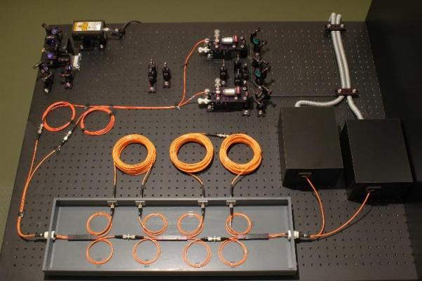
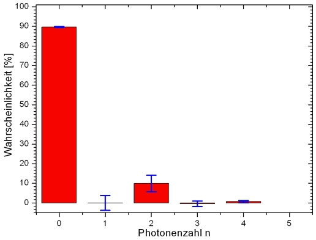
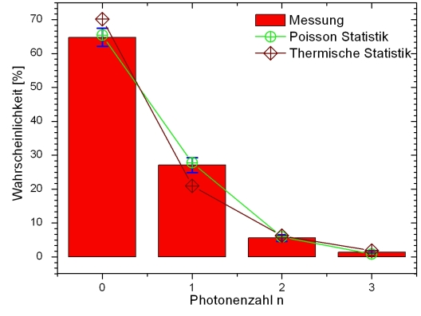

Photonenstatistik Kapitel 3:
Statistik der Photonenpaarquelle
Im letzten Kapitel wurde gezeigt, wie die Photonenstatistik mit dem TMD aufgenommen werden kann. In diesem Kapitel wird die parametrische Fluoreszenz der Photonenpaarquelle näher untersucht und mit theoretischen Vorhersagen verglichen.
Messung Photonenstatistik der Quelle
Mit dem Strahlteilernetzwerk kann die Photonenstatistik der Photonenpaarquelle ermittelt werden. Für das Experiment wird der zweite Eingang des Strahlteilernetzwerks mit der ursprünglichen Triggerseite verbunden (Abb. 1). Die Effizienz des Netzwerkes wurde bereits mit dem Trigger im letzen Kapitel ermittelt und kann jetzt zur Umrechnung eingesetzt werden. Aufgrund der Energie- und Impulserhaltung bei der parametrischen Fluoreszenz darf die Photonenstatistik der Quelle theoretisch keine Ein- und Dreiphotonenanteile enthalten.

Abb. 1: Versuchsaufbau, um beide Photonen der parametrischen Fluoreszenz nachzuweisen.
Diese Vermutung deckt sich mit der gemessenen Photonenstatistik (Abb. 2). Wie zu erwarten zeigt sich in der Photonenstatistik, dass nur die Photonenzahlen n=0, n=2 und n=4 von der Quelle ausgesendet werden. Sehr selten liegt ein Ereignis mit n=4 vor. Das Messprotokoll mit Fehlerbetrachtung kann hier heruntergeladen werden: Messprotokoll. Bei höheren Photonenzahlen mit n=4 und n=6 bricht aufgrund der hohen Verluste im Netzwerk die Rückrechung über die Matrizen zusammen.

Abb. 2: Photonenstatistik der Photonenpaarquelle
Messung der Photonenstatistik und Vergleich mit der Theorie
Licht kann in drei Arten unterteilt werden. Die Unterscheidung erfolgt z. B. mit der Korrelationsfunktion g²(0) oder mit der Photonenstatistik (Tabelle 1). Mit den Formeln in der Tabelle wird die Wahrscheinlichkeit berechnet, die Photonenzahl n vorzufinden. Der Faktor <n> bezeichnet die mittlere Photonenzahl. Bei der spontanen parametrischen Fluoreszenz würde man ohne den Trigger Detektor eine thermische Photonenstatistik erwarten. Die Messung ohne den Trigger-Detektor und der Vergleich mit der Poisson- und der thermischen Statistik (Abb. 3) zeigt jedoch einen deutlichen Trend zur Poissonstatistik. Nach [Fox06] kann eine thermische Statistik nur dann gemessen werden, wenn die Quelle eine einzelne Frequenz emittiert. Der Prozess der parametrischen Fluoreszenz emittiert Photonen mit einer Bandbreite von ca. 40nm. Aufgrund der verschiedenen Frequenzanteile wird aus der ursprünglichen thermischen Statistik aufgrund der Überlagerung von verschiedenen Frequenzen eine Poissonstatistik.
Thermisches Licht
z. B. Glühbirne
z. B. LaserTabelle 1: Unterteilung des Lichts in drei Arten

Abb. 3: Vergleich der gemessenen Statistik mit der Theorie
Originaldaten aus dem Experiment:
Statistik der Photonenpaarquelle: Statistik
Zurück zur Übersicht [klick]
Autoren: A. Strunz, P. Bronner, Oktober 2008